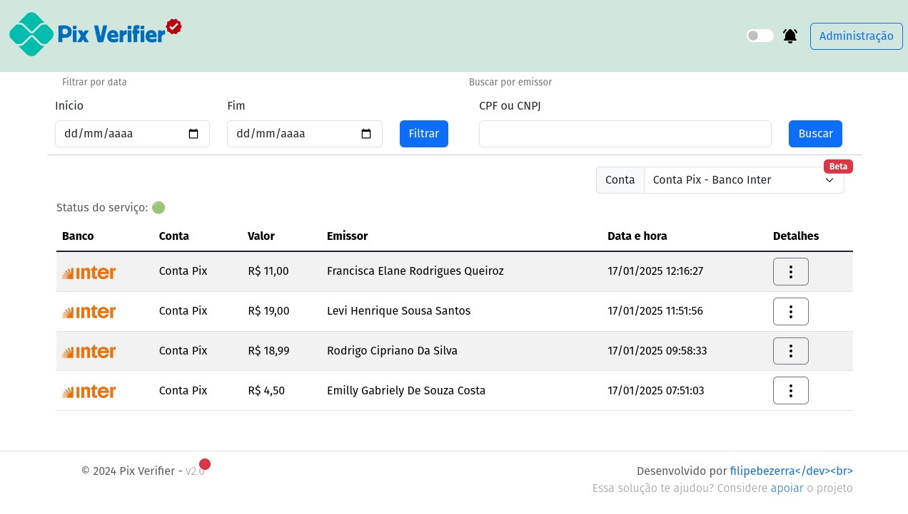
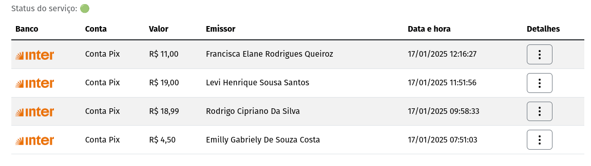
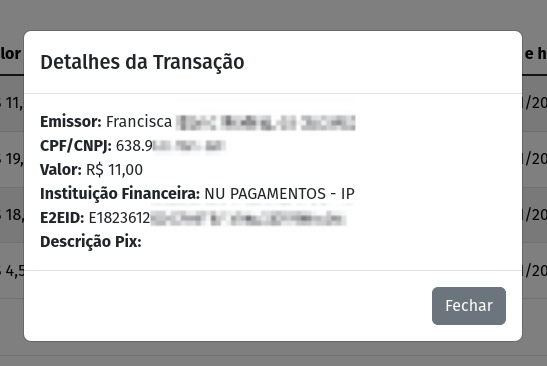
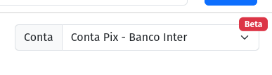
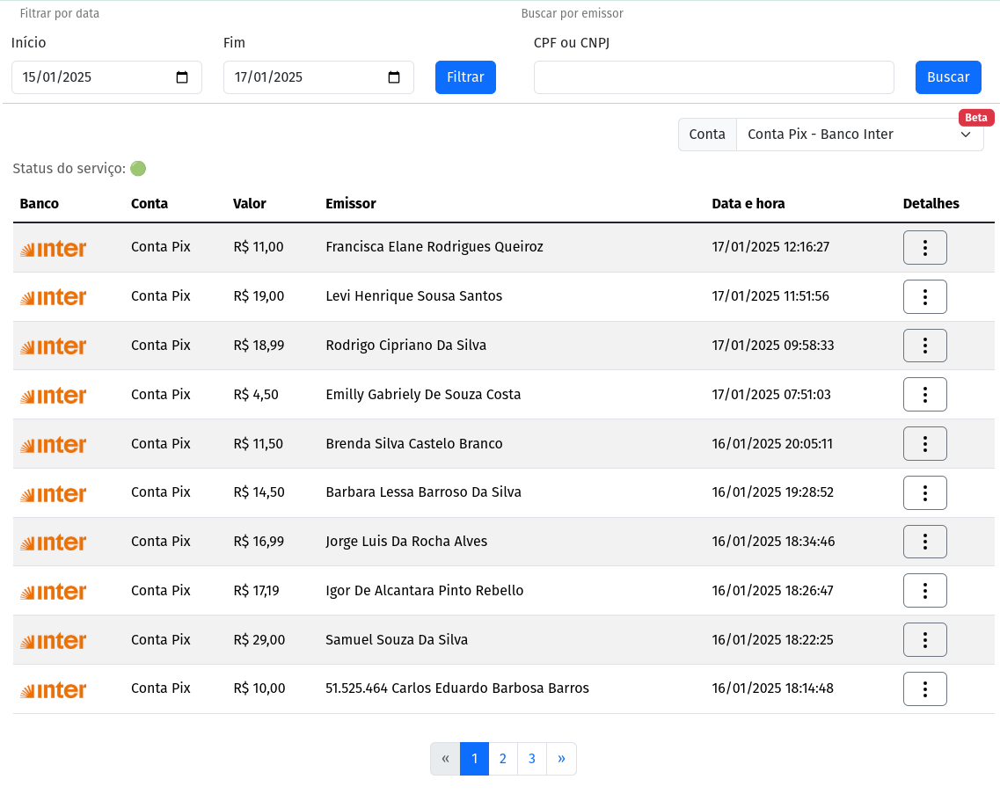

Página Principal
Visão Geral
A utilização do Pix Verifier é bem simples, basicamente tudo está na página principal, sendo possível filtrar por data, buscar por emissor ou escolher a conta que deseja monitorar, uma vez que é possível cadastrar mais de uma conta.

Na barra superior do lado direto há o switch para habilitar as notificações via áudio e o botão para o painel administrativo do Pix Verifier. Na parte principal da página, as transações são apresentadas de forma tabular.
Tabela de transações

Na tabela de transações, são exibidas as transferências que foram conciliadas pelo Pix Service, são ordenadas de forma decrescente, ou seja, as últimas transferências recebidas são exibidas primeiro, apresentando as informações básicas como o banco, conta que recebeu o crédito, valor, nome do pagador, data e hora da transação.
Por padrão a tabela vai ser preenchida com as últimas 10 transações, exibindo os botões de paginação caso haja mais de transações recebidas no dia.
Detalhes da transação
No campo Detalhes, clicando no botão , o sistema busca e exibe na tela as informações adicionais da transação.

Status do Serviço
O Pix Verifier é composto por dois serviços, o Pix Verifier WEB e o Pix Service, sendo esse último o que roda em background fazendo as consultas nas APIs e salvando no banco de dados as transferências Pix. Esse item pode apresentar dois estados diferentes:
Status do serviço: 🟢
Indica que o Pix Service está operante, é esperado que as transações recebidas sejam atualizadas na tabela.
Status do serviço: 🔴
Indica que o Pix Service não está em execução. Verificar no painel administrativo detalhes do status e consultar os logs.
Seletor de contas

O Pix Verifier permite que você cadastre mais de uma conta para monitorar, para verificar as transações recebidas nas outras contas, basta escolher a conta na lista.
Filtrar por data
É possivel consultar as transações de datas anteriores informado a data de início e a data final. O padrão de exibição na tabela de transações é o mesmo, com as 10 últimas transações do período selecionado.
Exemplo: Ao filtrar as transações do dia 15/01/2025 até 17/01/2025 a tabela de transações será preenchida a partir da última transação recebida do dia 17/01/2025, exibindo as 10 últimas e habilitando a paginação caso necessário.

Buscar por emissor
A busca por emissor vai retornar todas as transações recebidas do CPF/CNPJ informado. Basta informa o CPF ou CNPJ sem pontuação ou caracteres especiais e clicar em Buscar.
Verificador de atualização
No rodapé da página do lado esquedo na informação de copyright há um indicador que existe uma nova versão disponível do Pix Verifier. Esse indicador é representado por um pequeno círculo vermelho que ao passar o mouse por cima informa qual a nova versão disponível no Github.
Notificação por áudio
Além da indicação visual quando uma nova transação é recebida, há também a possibilidade de habilitar uma notificação por áudio. Para ativar, clique no switch localizado ao lado do botão Administração na barra superior da página.